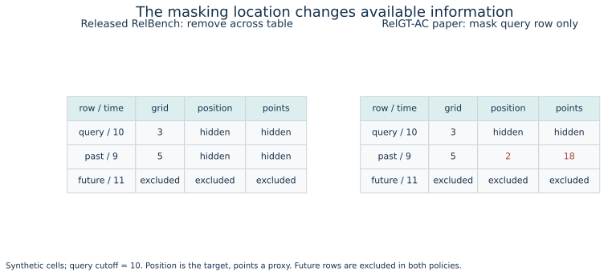
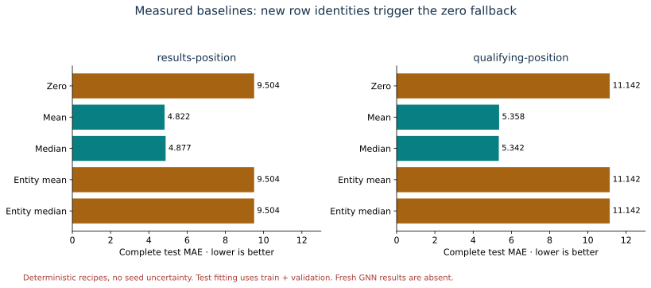
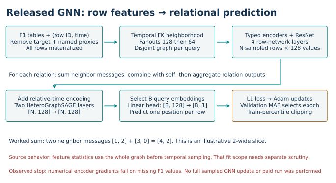
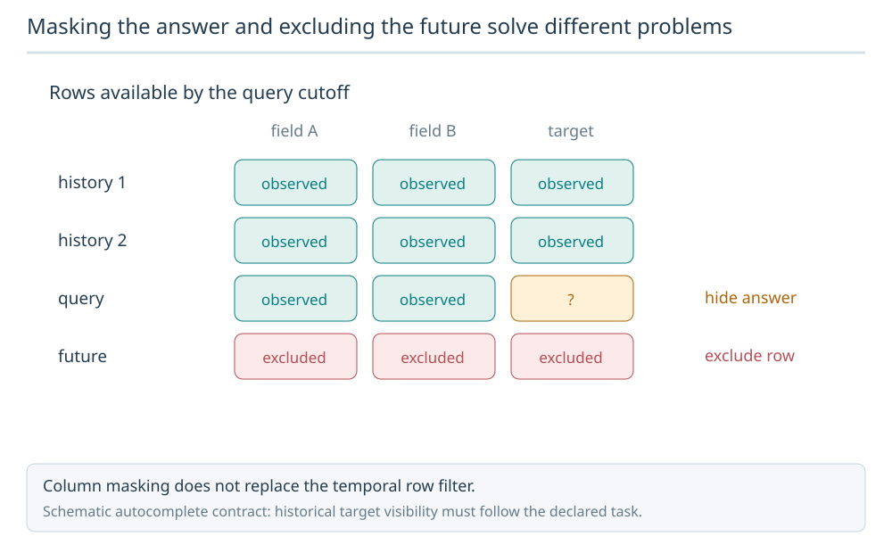
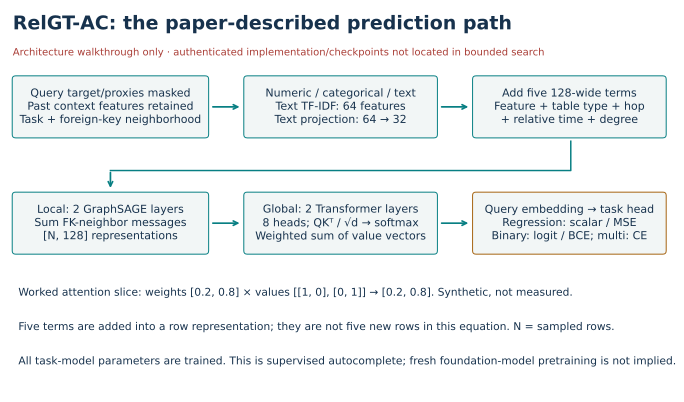

Year 5 · Quarter 3 · Lesson 181
Autocomplete without reading the answer
Your win: turn “predict this missing cell” into an executable task contract: name the row, hide the answer, define legal context, and score the complete split. Read the core path in about 20 minutes; use another session for the lab.
Observed: complete two-task aggregation-baseline reproduction. Fresh GNN training NOT_RUN_TRAINING_HEALTH_GATE; the approved baseline-plus-GNN experiment INCOMPLETE. RelGT-AC numerical reproduction NOT_RUN_SOURCE_GAPS. New cloud/API spend $0. Learner: PENDING_WRITTEN_DEFENSE.
Student notebook · Executed solution · Solution notebook · Quick reference · Reproduction protocol.
1 · A different question for the same database¶
Lesson 180 asked what evidence establishes a public encoder fine-tune. Its practical exit remains INCOMPLETE. Here we start the research-frontier sequence by changing the prediction question. Exploring a new task does not complete that earlier gate.
Forecasting constructs a future outcome: for example, whether a driver fails to finish during the next 30 days. Autocomplete predicts an existing column value in a particular row while pretending that value has not been entered yet. The target is still available to the evaluator; it must be hidden from the predictor. Supervised learning uses those target values to train a prediction rule. That does not by itself establish foundation-model pretraining or transfer to another database.
In plain terms. Forecasting asks “what happens next?” Autocomplete asks “what belongs in this blank?” Both require a precise account of what was knowable at prediction time.
RelBench v2 adds four databases: scholarly publications (rel-arxiv), enterprise orders (rel-salt), consumer reviews (rel-ratebeer), and clinical records (rel-mimic). Its new autocomplete tasks include binary, multiclass and numerical targets. We use the two published F1 numerical tasks to make the contract small enough to inspect completely. Primary source: RelBench v2 §§2–4.
2 · Name the row before choosing the model¶
A primary key identifies a row. A foreign key points to a row in another table. A result row can link to a driver, race and constructor, but those linked entities are not interchangeable with the result row itself.
Worked example. Suppose result row 9001 belongs to driver 7 at time 10. The query is (resultId=9001, time=10); the missing value is its finishing position. A second result for driver 7 has another result ID. A baseline grouped by result ID cannot retrieve driver 7's history merely because a driver foreign key exists.
The two real tasks use resultId and qualifyId, respectively. The complete query identity is (row ID, timestamp). Our evaluator rejects duplicate, missing, extra or mismatched identities before calculating a score. Prediction file order is irrelevant.
| Task | Training rows | Validation rows | Test rows |
|---|---|---|---|
results-position |
8,997 | 1,400 | 4,798 |
qualifying-position |
2,228 | 1,854 | 5,733 |
These reconstructed counts match paper Table 2. The cached database archive also matches the SHA256 digest in the publication-date source registry. A matching archive and count do not establish the historical training environment or seed identities.
Exact split boundaries. The pinned source uses (database minimum, 2005-01-01 minus one second], (2005-01-01, 2010-01-01 minus one second], and (2010-01-01, database maximum], then removes missing targets. Parentheses exclude a boundary; a square bracket includes it. We retain these source predicates, including their boundary exclusions. The original implementation allocates a timestamp per second across decades; our bounded implementation passes the same minimum and maximum to SQL. Independent SQL checks all 25,010 retained labels, and small dense-index tests verify the extrema calculation. Pinned task builder.
3 · Hiding the answer is more than dropping one cell¶
A proxy here is a field the task designer excludes because it could reveal information unavailable when filling the target. Correlation alone is not a universal reason to remove a legitimate predictor. The exclusion list belongs to the specific task contract.
For results-position, the released contract drops position and seven named fields from every result row: statusId, positionOrder, points, laps, milliseconds, fastestLap, and rank. For qualifying-position, it removes qualifying position without additional named proxies. A temporal cutoff then limits dated context to the query time. Column removal and temporal filtering solve different problems. Task registry, database transformation.
Worked example. At query time 10, a past context row has position 2 and points 18. Whole-table removal hides both. A query-only mask leaves them in that context row. A row dated 11 is excluded regardless of whether its position is hidden.


Your first live notebook function implements this column-visibility rule. The full baseline audit calls it to verify the released global policy. The widget also illustrates a different policy, but changing the widget does not modify the measured experiment.
Scope check. The source removes specified columns, not every conceivable proxy. Full event-availability auditing and sampled-neighborhood auditing remain unperformed after the training-health stop. Same calendar dates do not establish the within-day order in which race and qualifying information became available.
4 · Reproduce the simple models completely¶
Before training a graph model, reproduce the baseline meanings. Global mean/median predicts one fitted statistic for every query. Entity mean/median groups by the task's primary-key identity and uses zero for an unseen identity. Global zero always predicts zero. A driver-history aggregate would be an additional model, not the released entity baseline.
Fit population matters. The released script fits validation predictions on training labels. For test predictions it refits the aggregation baselines using training plus validation labels. No test labels enter the fitted statistic. Your second live notebook function receives the fitting rows explicitly, so the harness cannot hide this choice. Released baseline script.
Mean absolute error (MAE) is the average absolute prediction error, measured in finishing/qualifying places. Lower is better. R² compares squared error with always predicting the evaluation population's mean: 1 − sum((y − prediction)²) / sum((y − mean(y))²). Here y is the true position. Negative R² is possible. A constant learned from an earlier population need not equal the evaluation mean. That evaluation mean defines the metric denominator; it is not information passed to the predictor.
Worked example. Truth [1, 3, 5] and predictions [2, 3, 4] give MAE 2/3. Squared error is 2; the squared deviation from the truth mean 3 is 8. R² is 1 − 2/8 = 0.75. Your third function joins full query keys before applying these equations.


| Task / test recipe | Measured R² | Measured MAE |
|---|---|---|
| results-position / global mean | -0.175775 | 4.822495 |
| results-position / global median | -0.218592 | 4.876615 |
| results-position / entity mean | -3.148348 | 9.504377 |
| qualifying-position / global mean | -0.001576 | 5.357594 |
| qualifying-position / global median | -0.000525 | 5.342055 |
| qualifying-position / entity mean | -3.214357 | 11.142334 |
Entity median equals entity mean here; both equal global zero. The full validation/test table is in the measured report.
All five recipes were evaluated on both complete validation and test populations: 68,925 predictions. Independent SQL reconstructed every label, scalar aggregation regenerated every prediction, and scikit-learn independently checked every metric. All 40 comparisons with the paper's rounded baseline MAE/R² values are within the predeclared 0.001 tolerance. These are deterministic recipes; repeated seeds would not create meaningful uncertainty bars.
Work an unseen-identity baseline. Fit on row IDs 100 and 101 with positions 1 and 3. Query different row IDs 200 and 201, whose true positions happen to be 1 and 3. The fitting mean is 2; neither query ID has a fitted entity group:
| Recipe | Predictions | MAE | R² |
|---|---|---|---|
| Entity mean, unseen → 0 | [0, 0] | 2 | −4 |
| Global fitted mean | [2, 2] | 1 | 0 |
For the first row, squared error is 1² + 3² = 10; squared deviation from the query mean is 1² + 1² = 2, so R² is 1 − 10/2 = −4. Negative R² is valid. Transfer check: if both query truths become 2, that denominator is zero. This lesson's scorer rejects undefined R² instead of inventing a finite value; MAE can still be defined separately. These invented rows explain the metric, not another benchmark result.
The large entity-baseline errors are intelligible: zero primary-key overlap makes both entity recipes use the zero fallback. This result checks our understanding of task identity, rather than proving that relational history is useless.
5 · Model architecture: what the fresh GNN would train¶
A node embedding is a vector representing a row. The released model encodes numerical, categorical and timestamp features, then applies a four-layer row-level ResNet. ResNet adds intermediate representations through residual connections. The output contains 128 values per sampled row.
A heterogeneous graph distinguishes table and relation types. Two GraphSAGE layers sum neighboring messages within each foreign-key relation, transform self and neighbor representations, then sum relation outputs. Node-wise normalization and ReLU follow each layer. ReLU replaces negative coordinates with zero. Relative-time encodings tell the model how far context rows are from the query. Finally, a linear head turns the query embedding into one predicted position. Full model, encoder and graph layers.


The approved experiment specified five seeds per task, ten epochs per seed, batch 512, width 128, Adam learning rate 0.005 and fanouts [128, 64]. An epoch traverses the training loader; a fanout limits sampled neighbors at a hop. L1 loss penalizes absolute training error. The lowest validation MAE selects the saved state, with the last tie winning in the source. Predictions are clipped to the training labels' 2nd–98th percentiles. Reported R² is not the checkpoint-selection metric. Original trainer.
Why it stopped. A gradient is the derivative used to update a weight. The pinned encoder's numerical path produced finite outputs but nonfinite weight gradients on real missing circuits.alt and results values. For the circuits probe, 3 missing altitudes produced 128 nonfinite weight-gradient entries. An independent direct LinearEncoder experiment reproduced that count. Missing values can enter a multiplication before the output is cleaned; a zero upstream derivative multiplied by NaN can still be NaN.
Replacing missing inputs before multiplication produced finite gradients in a diagnostic control. We did not substitute that repair into the full model. The probe used CPU PyTorch 2.13.0 and PyTorch Frame 0.3.0, permitted by the release's open-ended dependencies. It does not establish what happened in the authors' historical environment or in an unrun CUDA configuration. Measured probe.
The source also materializes feature statistics over all database dates before temporal sampling. That is an additional fitting-scope concern: filtering sampled rows later does not undo statistics computed earlier. We have not established a full temporally valid training pipeline. Fresh GNN fitting stays NOT_RUN_TRAINING_HEALTH_GATE; the approved selected experiment stays INCOMPLETE.
6 · Read RelGT-AC as a research claim¶
RelGT-AC proposes query-row masking, a text encoder and a Transformer over relational context. TF-IDF weights words by their frequency in a row's text and their rarity across fitting documents. The paper uses 64 text features and projects them to 32 dimensions. A learned projection changes a vector's width. The experiment setup specifies 32 text dimensions, while equation 4 writes the general hidden width; without authenticated code that detail remains a source ambiguity. Table type, hop count, relative time and local degree are added to the feature representation. A hop traverses one graph edge; degree counts adjacent edges.
Local GraphSAGE combines nearby messages. Attention then gives sampled rows learned weights: compare query and key vectors, normalize scores with softmax so weights sum to one, and take a weighted sum of value vectors. Two Transformer layers use eight attention heads, which learn different comparisons. The query representation feeds a task-specific prediction head. Regression uses squared-error training; binary and multiclass tasks use cross-entropy losses that penalize wrong class probabilities. RelGT-AC §§4–5.
Masking the answer and excluding the future solve different problems
An autocomplete query hides its own target cell. A separate temporal eligibility rule excludes future rows. Masking every historical value of the target column would change the context contract.

Predict: Does hiding the query target make future rows safe?
No. Target masking and row-time eligibility are independent gates. Apply both before constructing the model input.
Answer: No. Target masking and row-time eligibility are independent gates. Apply both before constructing the model input.



Do not compare the wrong columns. RelGT-AC's tables reuse RelBench validation numbers. Its reported F1 R² values 0.528 and 0.239 must not be compared as fresh test results against RelBench test values 0.394 and 0.015. The paper-described seed-only masking also differs from the baseline's global removal. Before attributing a gain to attention, establish matched information access, split identities and selection procedures.
The paper states that code and checkpoints are released. In the recorded 2026-10-02 bounded search of the paper, author page and repository search results, we did not locate an authenticated RelGT-AC release. That is a search result, not proof of absence. The architecture here follows the paper and is not a validated reimplementation. Its numerical reproduction remains NOT_RUN_SOURCE_GAPS. Search and protocol ledger.
7 · Run, defend, retrieve¶
The default notebook authenticates an embedded real-data packet and reruns the complete baseline audit. It makes no cloud calls. The separately gated command verifies current packet hashes and stops before paid training:
.venv/bin/python labs/_budget_l181.py .venv/bin/python labs/_run_l181.py
# Expected exit 2: BLOCKED by the observed gradient prerequisite.
The complete original model/trainer is visible in the notebook appendix. The admission command and Modal local wrapper are tested gates; post-gate cloud training is NOT_VALIDATED. No pilot was dispatched. Actual new cloud/API spend is **$0**. The approved $10 aggregate cap, planned $8 stop and $2 reserve remain intact; changing missing-value handling would require a newly declared protocol.
EXIT. Implement the three functions, rerun all complete-key predictions, and submit a short defense: identify the task row, explain global versus query-only masking, justify the baseline fit populations, and state precisely which reproduction completed. Keep the GNN stop separate from the correct baseline results. Author preparation does not establish your mastery.
Primary reading: RelBench v2 §§2–4 and Tables 5/14/15, alongside the pinned task builder and baseline script. Read RelGT-AC as the frontier comparison after the core contract is clear. Tomorrow, explain why entity mean predicts zero here without reopening this page. Ask the teaching agent about any unclear step or send your defense for feedback.
Course sequence · Measured report · Paper comparison · Independent verification.
Next: Lesson 182. You can now state what information a model may use. Next, use that contract to ask whether combining two architectures changes the computation in a useful, testable way.